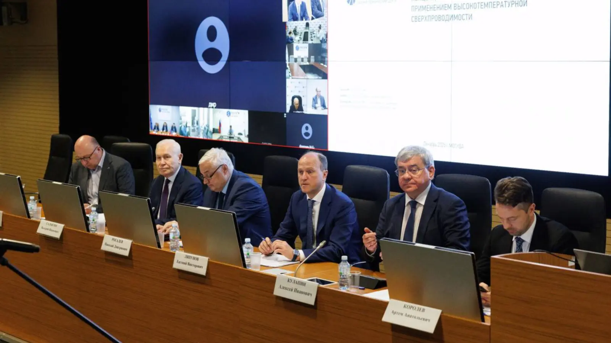

«Россети» и НИУ «МЭИ» обсудили совместную работу в инновационной сфере
«Россети» и НИУ «МЭИ» провели круглый стол, на котором обсудили реализацию совместных проектов и возможности расширения сотрудничества по направлениям технологического развития, включая решения для сетевого комплекса с использованием ИИ, роботизации и VR.
Отдельный акцент был сделан на практических шагах по развитию совместных решений для повышения наблюдаемости и управляемости электросетевого комплекса, а также на расширении экспертного взаимодействия между организациями.